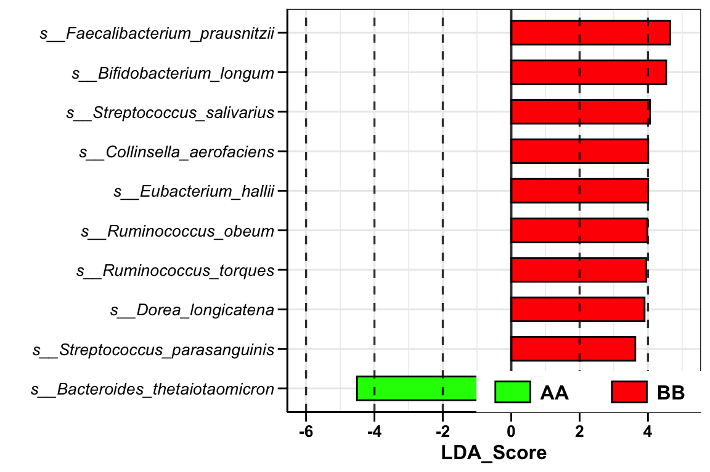
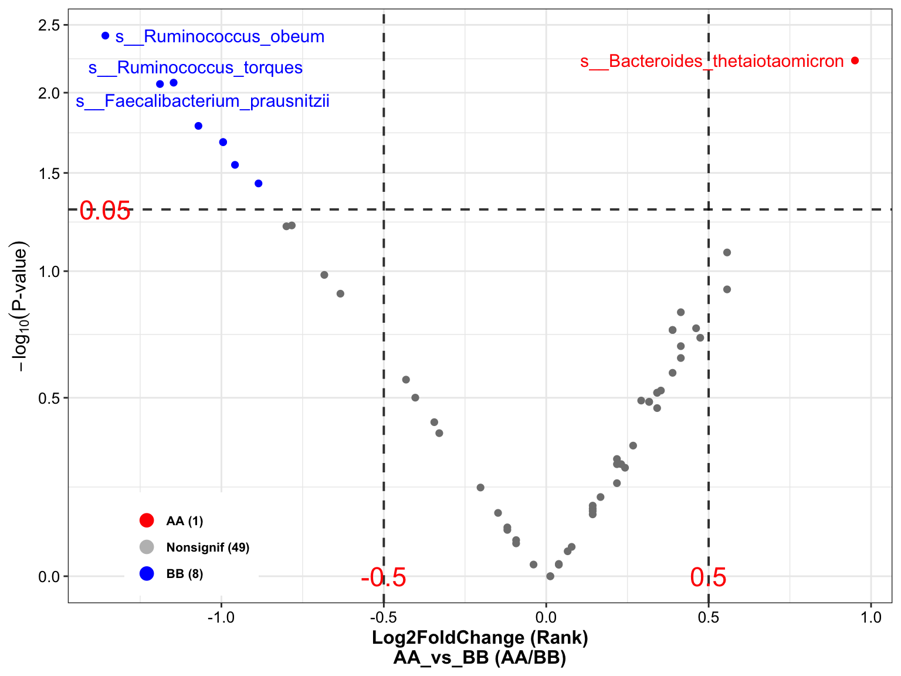
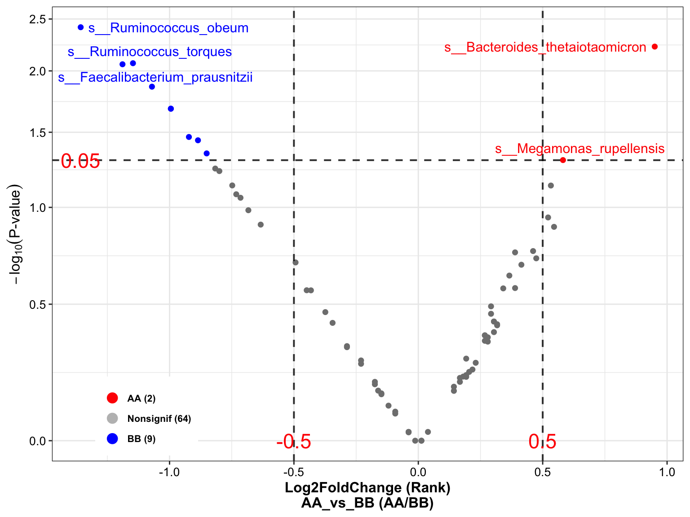
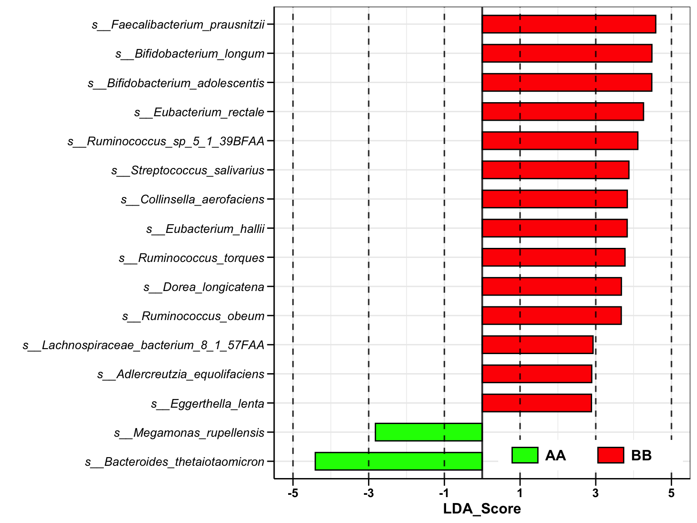

Chapter 8 Differential Analysis
Loading packages
library(XMAS2)
library(dplyr)
library(tibble)
library(phyloseq)
library(ggplot2)
library(ggpubr)
library(SummarizedExperiment)There are more than 10 approaches to perform differential analysis. Here, we choose two of them and recommend users going to Chapter 10 to see more details.
8.1 Filtering & Trimming
We suggest that filtering taxa with low abundance (the summarized value under cutoff: 1e-4) and trimming taxa with low prevalence (default: 0.2).
8.1.1 Filtering the low relative abundance or unclassified taxa by the threshold (total counts < 1e-4)
metaphlan2_ps_species_filter <- run_filter(metaphlan2_ps_species, cutoff = 1e-4, unclass = TRUE)
metaphlan2_ps_species_filter ## phyloseq-class experiment-level object
## otu_table() OTU Table: [ 171 taxa and 22 samples ]
## sample_data() Sample Data: [ 22 samples by 2 sample variables ]
## tax_table() Taxonomy Table: [ 171 taxa by 7 taxonomic ranks ]8.1.2 Trimming the taxa with low occurrence less than threshold
metaphlan2_ps_species_filter_trim <- run_trim(metaphlan2_ps_species_filter, cutoff = 0.2, trim = "feature")
metaphlan2_ps_species_filter_trim## phyloseq-class experiment-level object
## otu_table() OTU Table: [ 109 taxa and 22 samples ]
## sample_data() Sample Data: [ 22 samples by 2 sample variables ]
## tax_table() Taxonomy Table: [ 109 taxa by 7 taxonomic ranks ]8.2 Liner discriminant analysis (LDA) effect size (LEfSe)
- Calculation
metaphlan2_ps_lefse <- run_lefse(
metaphlan2_ps_species_filter_trim,
group = "Group",
group_names = c("AA", "BB"),
norm = "CPM",
Lda = 0)
head(metaphlan2_ps_lefse)## TaxaID Block Enrichment LDA_Score EffectSize Log2FoldChange (Median)\nAA_vs_BB
## 1 s__Bacteroides_thetaiotaomicron 7_AA vs 15_BB AA -4.510092 3.264270 5.365930
## 2 s__Streptococcus_parasanguinis 7_AA vs 15_BB BB 3.629399 2.118538 -3.570239
## 3 s__Dorea_longicatena 7_AA vs 15_BB BB 3.899713 3.282368 NA
## 4 s__Ruminococcus_torques 7_AA vs 15_BB BB 3.948394 1.993293 -2.695141
## 5 s__Ruminococcus_obeum 7_AA vs 15_BB BB 3.981537 3.288750 -5.130695
## 6 s__Eubacterium_hallii 7_AA vs 15_BB BB 4.006574 2.762474 NA
## Median Abundance\n(All) Median Abundance\nAA Median Abundance\nBB Log2FoldChange (Mean)\nAA_vs_BB Mean Abundance\n(All)
## 1 3629.3802 46588.1306 1129.717 3.207505 24735.889
## 2 1215.9394 149.3142 1773.577 -0.410051 6273.380
## 3 972.1956 0.0000 9620.775 -7.317298 7657.442
## 4 4796.7182 1076.8522 6973.878 -2.516743 10440.883
## 5 8347.2765 354.8131 12430.616 -2.699162 10757.107
## 6 5235.2856 0.0000 12282.510 -3.951275 10773.494
## Mean Abundance\nAA Mean Abundance\nBB Occurrence (100%)\n(All) Occurrence (100%)\nAA Occurrence (100%)\nBB Odds Ratio (95% CI)
## 1 63103.12565 6831.179 86.36 100.00 80.00 0.055 (-5.6;5.7)
## 2 5124.74102 6809.412 81.82 57.14 93.33 1.2 (1.5;0.86)
## 3 70.21339 11198.149 63.64 42.86 73.33 2.7e+14 (2.7e+14;2.7e+14)
## 4 2474.05445 14158.736 95.45 85.71 100.00 1500 (1600;1500)
## 5 2266.52678 14719.378 90.91 71.43 100.00 25 (31;18)
## 6 991.57942 15338.388 63.64 42.86 73.33 170 (180;160)- Visualization
plot_lefse(
da_res = metaphlan2_ps_lefse,
x_index = "LDA_Score",
x_index_cutoff = 2,
group_color = c("green", "red"))

Figure 8.1: Lefse analysis
8.3 Wilcoxon Rank-Sum test
- Calculation
metaphlan2_ps_wilcox <- run_wilcox(
metaphlan2_ps_species_filter_trim,
group = "Group",
group_names = c("AA", "BB"))
head(metaphlan2_ps_wilcox)## TaxaID Block Enrichment EffectSize Statistic Pvalue AdjustedPvalue Log2FoldChange (Median)\nAA_vs_BB
## 1 s__Alistipes_finegoldii 7_AA vs 15_BB Nonsignif 0.7750714 75.0 0.08188173 0.3957617 NA
## 2 s__Alistipes_indistinctus 7_AA vs 15_BB Nonsignif 0.1145436 68.0 0.17792767 0.5431476 NA
## 3 s__Alistipes_onderdonkii 7_AA vs 15_BB Nonsignif 0.1879840 66.5 0.29869756 0.6107827 NA
## 4 s__Alistipes_putredinis 7_AA vs 15_BB Nonsignif 1.5991223 54.0 0.94099183 0.9745987 NA
## 5 s__Alistipes_shahii 7_AA vs 15_BB Nonsignif 1.0331682 71.0 0.17515058 0.5431476 NA
## 6 s__Bacteroides_caccae 7_AA vs 15_BB Nonsignif 0.2236323 63.0 0.45130356 0.7478745 NA
## Median Abundance\n(All) Median Abundance\nAA Median Abundance\nBB Log2FoldChange (Rank)\nAA_vs_BB Mean Rank Abundance\nAA
## 1 0.00000000 0.0027362 0.00000 0.55679725 14.71
## 2 0.00000000 0.0000000 0.00000 0.38896713 13.71
## 3 0.00000000 0.0002823 0.00000 0.35298403 13.50
## 4 0.00016915 0.0000000 0.00022 0.03870725 11.71
## 5 0.00012580 0.0062474 0.00000 0.46134594 14.14
## 6 0.00020790 0.0004158 0.00000 0.26748031 13.00
## Mean Rank Abundance\nBB Occurrence (100%)\n(All) Occurrence (100%)\nAA Occurrence (100%)\nBB Odds Ratio (95% CI)
## 1 10.00 40.91 57.14 33.33 0.0025 (-12;12)
## 2 10.47 27.27 42.86 20.00 0.0085 (-9.3;9.4)
## 3 10.57 45.45 57.14 40.00 0.37 (-1.6;2.3)
## 4 11.40 54.55 42.86 60.00 0.47 (-0.99;1.9)
## 5 10.27 50.00 57.14 46.67 0.17 (-3.2;3.6)
## 6 10.80 50.00 57.14 46.67 0.039 (-6.3;6.4)- Volcano
plot_volcano(
metaphlan2_ps_wilcox,
group_names = c("AA", "BB"),
x_index = "Log2FoldChange (Rank)\nAA_vs_BB",
x_index_cutoff = 0.5,
y_index = "Pvalue",
y_index_cutoff = 0.05,
group_color = c("red", "grey", "blue"),
topN = 4,
taxa_name = "s__Megamonas_rupellensis")

Figure 8.2: Wilcoxon Rank-Sum test
8.4 Dominant taxa
Display the significant taxa with selection using boxplot.
plot_topN_boxplot(
ps = metaphlan2_ps_species_filter_trim,
da_res = metaphlan2_ps_wilcox,
x_index = "Log2FoldChange (Rank)\nAA_vs_BB",
x_index_cutoff = 0.5,
y_index = "Pvalue",
y_index_cutoff = 0.05,
topN = 4,
group = "Group")

Figure 8.3: Dominant Taxa
8.5 Multiple differential analysis by one function
here, we provide the run_multiple_da for obtaining the results list from multiple differential analysis methods.
multiple_res <- run_multiple_da(
metaphlan2_ps_species_filter_trim,
group = "Group",
group_names = c("AA", "BB"),
da_method = c("wilcox", "limma_voom", "ttest"))
names(multiple_res)## [1] "wilcox" "limma_voom" "ttest"- plot results
plot_multiple_DA(
Multip_DA_res = multiple_res,
x_index_list = c("Log2FoldChange (Rank)\nAA_vs_BB", "logFC", "Log2FoldChange (geometricmean)\nAA_vs_BB"),
x_index_cutoff = 0,
y_index = "Pvalue",
y_index_cutoff = 0.5,
cellwidth = 35,
cellheight = 10,
fontsize_number = 15)

Figure 8.4: Multiple DA results
8.6 Systematic Information
sessionInfo()## R version 4.1.2 (2021-11-01)
## Platform: x86_64-apple-darwin17.0 (64-bit)
## Running under: macOS Monterey 12.2.1
##
## Matrix products: default
## LAPACK: /Library/Frameworks/R.framework/Versions/4.1/Resources/lib/libRlapack.dylib
##
## locale:
## [1] en_US.UTF-8/en_US.UTF-8/en_US.UTF-8/C/en_US.UTF-8/en_US.UTF-8
##
## attached base packages:
## [1] grid stats4 stats graphics grDevices utils datasets methods base
##
## other attached packages:
## [1] magrittr_2.0.2 glue_1.6.2 Gmisc_3.0.0 htmlTable_2.4.0
## [5] Rcpp_1.0.8.2 SummarizedExperiment_1.24.0 Biobase_2.54.0 GenomicRanges_1.46.1
## [9] GenomeInfoDb_1.30.1 IRanges_2.28.0 S4Vectors_0.32.3 BiocGenerics_0.40.0
## [13] MatrixGenerics_1.6.0 matrixStats_0.61.0 ggpubr_0.4.0 ggplot2_3.3.5
## [17] phyloseq_1.38.0 tibble_3.1.6 dplyr_1.0.8 XMAS2_2.1.3
##
## loaded via a namespace (and not attached):
## [1] backports_1.4.1 Hmisc_4.6-0 plyr_1.8.6 igraph_1.2.11 splines_4.1.2
## [6] crosstalk_1.2.0 BiocParallel_1.28.3 TH.data_1.1-0 digest_0.6.29 foreach_1.5.2
## [11] htmltools_0.5.2 fansi_1.0.2 checkmate_2.0.0 memoise_2.0.1 cluster_2.1.2
## [16] limma_3.50.1 Biostrings_2.62.0 annotate_1.72.0 bayesm_3.1-4 sandwich_3.0-1
## [21] metagenomeSeq_1.36.0 jpeg_0.1-9 colorspace_2.0-3 ggrepel_0.9.1 blob_1.2.2
## [26] xfun_0.30 crayon_1.5.0 RCurl_1.98-1.6 jsonlite_1.8.0 libcoin_1.0-9
## [31] genefilter_1.76.0 survival_3.3-1 zoo_1.8-9 iterators_1.0.14 ape_5.6-2
## [36] gtable_0.3.0 zlibbioc_1.40.0 XVector_0.34.0 compositions_2.0-4 DelayedArray_0.20.0
## [41] car_3.0-12 Rhdf5lib_1.16.0 shape_1.4.6 DEoptimR_1.0-10 abind_1.4-5
## [46] scales_1.1.1 pheatmap_1.0.12 mvtnorm_1.1-3 DBI_1.1.2 edgeR_3.36.0
## [51] rstatix_0.7.0 xtable_1.8-4 foreign_0.8-82 bit_4.0.4 Formula_1.2-4
## [56] DT_0.21 glmnet_4.1-3 htmlwidgets_1.5.4 httr_1.4.2 DiagrammeR_1.0.9
## [61] gplots_3.1.1 RColorBrewer_1.1-2 modeltools_0.2-23 ellipsis_0.3.2 farver_2.1.0
## [66] pkgconfig_2.0.3 XML_3.99-0.9 sass_0.4.0 nnet_7.3-17 locfit_1.5-9.5
## [71] utf8_1.2.2 labeling_0.4.2 tidyselect_1.1.2 rlang_1.0.2 reshape2_1.4.4
## [76] AnnotationDbi_1.56.2 munsell_0.5.0 tools_4.1.2 visNetwork_2.1.0 cachem_1.0.6
## [81] cli_3.2.0 generics_0.1.2 RSQLite_2.2.10 ade4_1.7-18 broom_0.7.12
## [86] evaluate_0.15 biomformat_1.22.0 stringr_1.4.0 fastmap_1.1.0 yaml_2.3.5
## [91] knitr_1.37 bit64_4.0.5 robustbase_0.93-9 caTools_1.18.2 forestplot_2.0.1
## [96] purrr_0.3.4 KEGGREST_1.34.0 coin_1.4-2 nlme_3.1-155 compiler_4.1.2
## [101] rstudioapi_0.13 png_0.1-7 ggsignif_0.6.3 geneplotter_1.72.0 bslib_0.3.1
## [106] stringi_1.7.6 highr_0.9 lattice_0.20-45 Matrix_1.4-0 tensorA_0.36.2
## [111] vegan_2.5-7 permute_0.9-7 multtest_2.50.0 vctrs_0.3.8 pillar_1.7.0
## [116] lifecycle_1.0.1 rhdf5filters_1.6.0 jquerylib_0.1.4 cowplot_1.1.1 data.table_1.14.2
## [121] bitops_1.0-7 R6_2.5.1 latticeExtra_0.6-29 bookdown_0.24 KernSmooth_2.23-20
## [126] gridExtra_2.3 codetools_0.2-18 MASS_7.3-55 gtools_3.9.2 assertthat_0.2.1
## [131] Wrench_1.12.0 rhdf5_2.38.1 DESeq2_1.34.0 withr_2.5.0 multcomp_1.4-18
## [136] GenomeInfoDbData_1.2.7 mgcv_1.8-39 parallel_4.1.2 rpart_4.1.16 tidyr_1.2.0
## [141] rmarkdown_2.13 carData_3.0-5 lubridate_1.8.0 base64enc_0.1-3